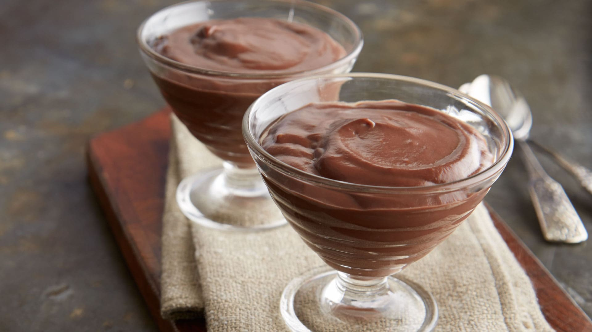

Chocolate Pudding Recipe

A Delicious Quick Creamy Chocolate Pudding Recipe
How to make chocolate pudding is now quick and easy with our chocolate pudding recipe that uses HERSHEY’S cocoa. The key is to consistently stir the chocolate pudding mixture over medium heat, and once it’s chilled, you can top it off with whipped cream, fresh fruit, chocolate chips or anything your heart desires.
Save this chocolate pudding recipe for your next dinner party, birthday celebration or any moment that deserves an easy chocolate pudding recipe for all to enjoy. You’ll be licking the spoon clean!
Ingredients
- 2/3 cup sugar
- 1/4 cup Hershey's Cocoa
- 3 Tbsps corn starch
- 1/4 tsp salt
- 2 1/4 cups milk
- 2 Tbsps butter or margarine
- 1 tsp vanilla extract
- Whipped Topping (optional)
Equipment needed
- Saucepan
- Stovetop
- Refrigerator
- Measuring Cups
- Mixer
- Rubber Scraper
- Spatula
Stovetop directions
- Stir together sugar, cocoa, cornstarch and salt in medium saucepan; gradually stir in milk.
- Cook over medium heat, stirring constantly, until mixture boils; boil and stir for 1 minute. Remove from heat; stir in butter and vanilla. Pour into individual dessert dishes. To avoid a skin from forming on top, press the plastic wrap directly onto surface; serve warm or refrigerate for at least 2 hours. Garnish with whipped topping, if desired. Makes 4 servings.
Microwave directions
- Stir together sugar, cocoa, cornstarch and salt in large microwave-safe bowl; gradually stir in milk.
- Microwave on high (100%) for 7 to 10 minutes or until mixture comes to full boil, stirring every 2 minutes.
- Stir in butter and vanilla. Pour into dishes and serve as directed above.